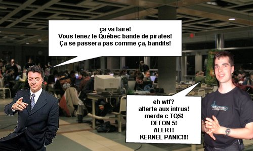
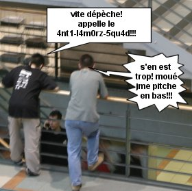
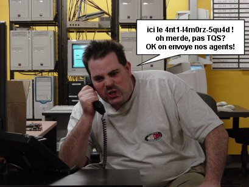
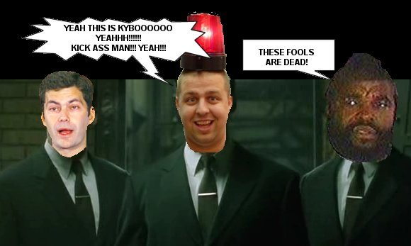
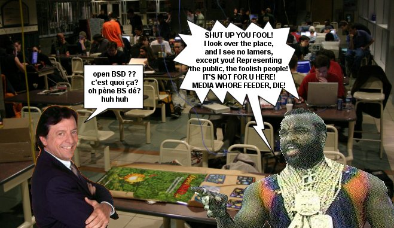
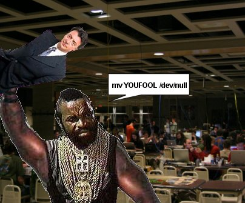

ce fût donc la folie furieuse au hackfest et ya fallu caller les renforts..





Et c'est ainsi que Mister T. résolu le problème!
Alors on se demande, comment l'ulaval a pu accepter un tel projet,
si la consciance publique n'était pas pour?
La réponse dans la prochaine page!